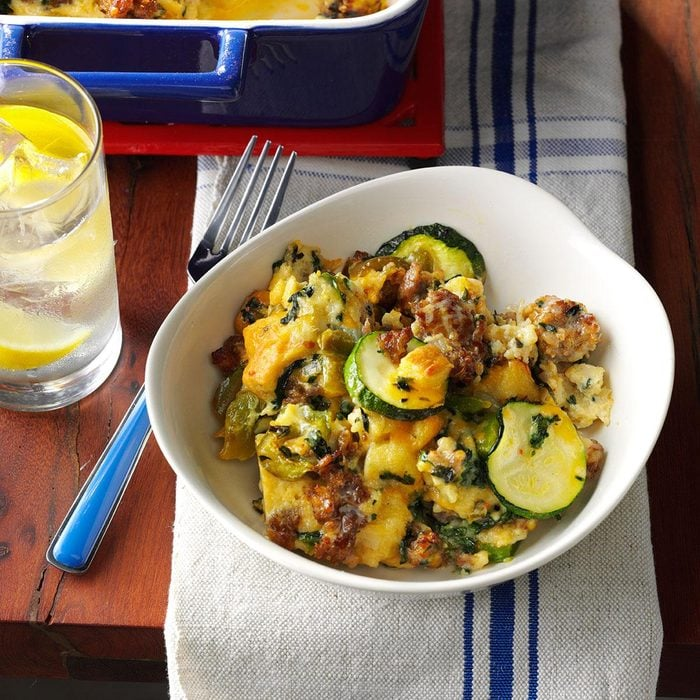

Veggie Sausage Strata

As a retired home economics teacher, I've made quite a few recipes through the years. This hearty casserole is a favorite in my family.
Ingredients
- 2 pounds bulk Italian sausage
- 2 medium green peppers, coarsely chopped
- 1 medium onion chopped
- 8 large eggs
- 2 cups 2% milk
- 2 teaspoons salt
- 2 teaspoons white pepper
- 2 teaspoons ground mustard
- 12 slices bread, cut into 1/2-inch pieces
- 1 package (10 ounces) frozen chopped spinach, thawed and squeezed dry
- 2 cups shredded Swiss cheese
- 2 cups shredded cheddar cheese
- 1 medium zucchini, cut into 1/4-inch slices
Watch a tutorial video here
Direction
- In a large skillet, cook the sausage, green peppers and onion over medium heat until meat is no longer pink; drain. Meanwhile, in a large bowl, whisk the eggs, milk, salt, pepper and mustard. Stir in the sausage mixture, bread, spinach, cheeses and zucchini.
- Transfer mixture to a greased 13x9-in. baking dish. Cover and refrigerate overnight.
- Remove from the refrigerator 30 minutes before baking. Cover and bake at 350° for 40 minutes. Uncover; bake 40-45 minutes longer or until a knife inserted in the center comes out clean.
Return